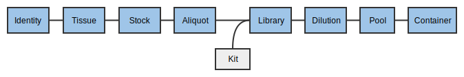

MISO
MISOSequencing tutorial
1. Logging in
Much like the old Geospiza LIMS, you need to log in to MISO LIMS in order to make changes to any LIMS entities. Logging in lets MISO record any changes you make on entities you have access to.
If you were able to log in to Geospiza LIMS, you already have the correct
permissions and can proceed to logging in. If you are a new user, you will need
to contact helpdesk@oicr.on.ca so that they put you into the appropriate
Active Directory group, MISO_ROLE_INTERNAL.
Try to log in now:
- Click on http://miso.gsi.oicr.on.ca.
- Enter your username (e.g. jdoe) and password and click the Login button.
MISO uses the same username and password as your OICR email account.
If all goes well, you should see the MISO Dashboard and see a message at the top right: "Logged in as: jdoe".
2. Checking for unfulfilled orders
The Orders page is used to decide what needs to be sequenced.
- From the navigation menu, choose Orders.
- Verify that the pool you just created is listed in the Active tab.
Columns on this page will disappear if there are no entries (e.g., the Failed column will not be shown if there are no failed runs). When enough lanes have been sequenced, the row will disappear from the Active tab, but remain in the All tab. Lanes currently being sequenced will be marked as in-progress and remain on the Active tab until the run transitions to Completed.
A pool can have many orders. Orders for the same platform and chemistry are summed when displayed on this page.
2.1 Scan libraries into your inbox
First, scan the libraries from the libraries team into your inbox for further work.
Boxes hold samples, libraries, and pools. They do not track reagents or primers. Boxes are separated into uses for different kinds of storage (e.g., tissue samples versus extracted DNA), but there is no check that items in a box match. Each box also has a size that includes the physical dimensions of the box as well as whether the box is compatible with the VisionMate scanner. Every position in the box is identified by a standard row letter + column number format (e.g., C05).
In this exercise, we are going to take tissues/samples/libraries from the previous team/collaborator by scanning them out of the previous box and into a newly created 'inbox'.
First, create a new box. This box will be your 'inbox'.
- From the navigation panel, choose Boxes and then Add Box.
- On the Create Box page, enter the information:
- Alias: A short name for the box. Record this name in your worksheet.

- Description: a human description of the box purpose “gDNA ready for
library prep for
”. - Use: The contents of the box. Select an appropriate use for your entities.
- Size: Select
8 x 12 scannable. - Click Save.
Upon clicking save, a graphic of the box will appear.

You can now fill the box with the tissues, stocks, aliquots, libraries, or pools that were made in previous steps. Collect the appropriate matrix tubes/barcodes now.
- Click on a position in the displayed Contents grid.
- Enter a matrix barcode into the Search box on the right and click Lookup. Normally a hand scanner would be used. You can also search for items by their name or alias
- Click Update Position.
- ⚠ The Save button at the top of the page does not work for individual positions, only for Box Information.
- Repeat for as many samples/libraries/pools as you want.
The table below the box diagram shows the position and information for the currently selected sample. If you would like to see all of the samples in the table, click the List all Box Contents button at the top right of the table.
In the lab, it is possible to use Options > Scan Box to use the plate scanner and update all positions at once, but that will not be covered in this tutorial.
Using Boxes
Boxes can be found either from the Sample or Library page or the Boxes page.
- On the Sample page, search for one of your sample or library aliases and click on the alias to load the page.
- The Box and position is listed under Location near the top of the Sample
Information section. Click on the link to go to the Box (e.g.
PROJ_OUTBOX, A03).
Boxes can be used to store Samples, Libraries and Pools and one box can store all three types.
3. Creating runs from scratch
MISO supports runs from both Illumina and PacBio sequencers (and others), so the terms used for instrument runs and associated libraries are intentionally different from those used by the vendor. Every time a sequencer is loaded and sequencing begins, a Run is created. Runs are picked up automatically from the instrument. A Sequencing Container is the link between the library information and the instrument Run and contains one or more lanes. Each Illumina lane, or PacBio SMRT cell in the container is loaded with exactly one Pool. Runs and Containers can be associated as soon as the Run and Container are both created.
3.1 Create a Container
- On the Sequencing Containers page, select the Illumina platform and click the Create Flowcell button near the top left of the table.
- Select NextSeq 550 platform. Only active (non-retired) models are available.
- Select 4 Lane for the size of the container.
- Enter the name of your project as the serial number.
- Click Save in the upper right corner of the page.
3.2 Create a Run
- On the Runs page, select the Illumina platform and click the Create Illumina Run button near the top left corner of the table.
- Select NB551056 (NextSeq 550) from the sequencers list. Only active (non-retired) sequencers are available.
- Enter a unique and memorable Alias for your run.
- Select Sequencing Parameters
High 2×151, near the top of the Run section. - In the Run Path field, enter
pathas the file path to the sequencer output. - Check Paired End.
- Select Status
Running. Note that if MISO does not automatically detect runs from this sequencer, all status updates will have to be entered manually. - Enter a date into Start Date.
- Click Save in the upper right corner of the page.
- In the Flow Cell section, click the Add Flow Cell button.
- Enter the flow cell serial number of the container you have just created and click the Add button.
4. Working with automatically created runs
About five minutes after an instrument begins imaging, MISO will detect it and create a Run. As sequencing continues, MISO will pull back information about the quality of the run similar to the on-instrument applications like SAV. This includes statistics like percent pass filter, the percent of bases with Qscores over 30, and cluster density.
- From the Runs page, find the run assigned to you for this tutorial. Click on the run alias to go to the run page.
- Scroll down to the Metrics section and examine the sequencing metrics for this run.
{kind=link}
5. Adding pools to runs
The Run (representing an instrument run) is associated with Pools using a Sequencing Container.

5.1 Add a pool to a run
- On the Run assigned to you, scroll down to the Lanes section.
- Check the first the lane.
- Click Assign Pool from the toolbar.
- Search for the pool you previously created. Try Outstanding Orders (Matched Chemistry).
- Click the pool from the list.
Now check on the Order.
- Click on the Orders page and verify that the Remaining column now shows 1 for the pool you added to the run.
5.1 Mark a library as Low Quality
Not every library realises its full potential. After sequencing, specific libraries can be flagged as having low sequencing quality. The "Low Quality Sequencing" indicator causes any pool containing this library to be flagged, so that it can be checked before it is sequenced again.
- From the Libraries page, find one of your libraries and click the link.
- Check Low Quality Sequencing.
- Click Save.
Now if the Pool containing that Library is added to a Sequencing Container, it will be flagged.
- Go back to your Run page.
- Find your pool using the lanes table. It will be flagged red.
5.2 Setting Per-Lane QCs
Sometimes a particular lane is bad. MISO allows setting a per-lane QC. This does not prevent analysis. Contact GSI when a lane should not be analysed.
- Go to your run page.
- Check the first run.
- Click Set QC from the toolbar.
- Pick Failed: Other problem.
- Enter a description of the problem.
- Click Set.
6. Scanning libraries/pools into your outbox
Lastly, place the libraries/pools in your outbox for storage.
Finally, update the TUTORIAL_OUTBOX with your samples/libraries/pools to pass them on to the next team or to put them into storage.
Removing and discarding tubes
When you have a position selected, you can also either remove the tube from the box (setting its location to "Unknown") or discard the tube, meaning it has been used up. Discarding the tube sets the volume of the sample to 0 and marks it as "discarded", and removes it from its box.
- Click on one of the positions in the box with a tube. The position, alias, and barcode will appear to the right or below the box graphic. Right-click on the alias and pick "Open in new tab" to load the details page.
- Go back to the Box page in the other tab. Make sure the tube is still selected in the Box and click Discard Tube. Click "OK" in the pop-up.
- Go to the other tab with the Details page and click the browser refresh button. The Location field will show as blank, Volume will be set to 0.0, and the Discarded box will be ticked.
Moving items around in boxes
An item can only exist in one box. If assigned to a new box, it will disappear from the original.
- In the current tab, go to the Boxes page, find the TUTORIAL_OUTBOX box. This box was previously created by the MISO developers for the tutorial.
- Choose an empty position and enter one of your barcodes.
- Click Search and Update Position.
- Go back to your own Box and refresh the page. The sample was removed.
- Repeat this process for the rest of the samples/libraries that you are transferring to the next team.
7. Adding Service Records to Sequencers
Each sequencer can have one or more associated service records.
- Select Sequencers.
- Choose an individual sequencer.
- Use the blue arrow to expand the Service Records section.
- From Options, choose Add Sequencer Record.
- Fill in the form as follows:
- Title: a short description of the work (e.g.,
Remove gremlin from sequencer) - Description: a long description of the work (e.g.,
A gremlin was found outside of the terrible 80s movie. It had developed a taste for polymerase.) - Serviced By: your name
- Service Date: the current date
- Title: a short description of the work (e.g.,
- Click Save.
After saving, it is also possible to attach files to the record. Look under the Attachments heading.
8. Troubleshooting
- When instruments break down, how do you log failures into the system?
- Add a service record as in 7: Adding Service Records to Sequencers
- How do you assign single lane failures (if possible)?
- It is possible to add a RunQC which allows you to select one or more lanes, but adding one does not change the Orders count for the pool in that lane (ie. it does not "requeue" the pool). At this time, please go to the Edit Pool page for the pool in the lane and add another Order for the number of lanes and sequencing parameters requested.
- How you fail flowcells? Or how does MISO detect failed runs?
- If MISO automatically detects runs from this sequencer, then in most cases MISO will automatically detect failed runs if the run has begun sequencing.
- If MISO does not automatically detect runs from this sequencer or you note that MISO has not detected that the run has failed, then you must select the
Failedstatus on the Edit Run page, and enter a completion date. - If the pool contains a single library and you know that the library is of low enough quality that sequencing should not be attempted again, follow the steps to mark a library as Low Quality.
| < Libraries tutorial | Home > |